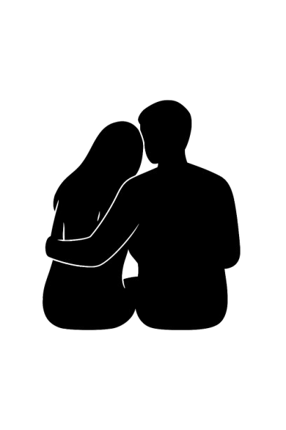

Gracias por estar en mi vida. Sé que un mes de novios no parece mucho, pero para mí se siente como haber vivido años enteros de felicidad condensada en cada momento a tu lado. Este tiempo que hemos compartido me ha enseñado tanto, me ha hecho descubrir partes de mí que antes no conocía: mi paciencia, mi ternura, mi capacidad de admirar sin límites. Todo eso es gracias a ti, porque tu presencia ilumina hasta los rincones más oscuros de mi corazón.
Me tienes completamente enamorado, no solo de ti, sino de cada gesto tuyo, cada sonrisa que ilumina tu rostro, cada mirada que me hace sentir que soy el único en tu mundo. Eres perfecta para mí en todos los sentidos: linda, hermosa, graciosa, inteligente, dulce y fuerte. Todo lo que eres y todo lo que haces me enamora más cada día. La distancia a veces me pesa, porque deseo estar cerca de ti, abrazarte, besarte, sentir tu calor, escuchar tus latidos y perderme en ellos. Cada momento lejos de ti se siente incompleto, pero cada recuerdo y cada pensamiento sobre ti me da fuerza para esperar con alegría el próximo encuentro.
Eres la flor en medio de un campo vasto de malañas, esa flor que se mantiene firme ante cualquier tormenta, que no se rinde y que siempre busca la luz. Y yo quiero ser ese jardinero que cuide de ti, que proteja tu esencia y tu belleza, que te acompañe en cada paso de la vida, que riegue tu corazón con amor y paciencia. Mi promesa es cuidarte, amarte y estar contigo para siempre, sin importar las dificultades que se presenten en el camino.
Recuerdo cada instante que hemos compartido: tus risas contagiosas que llenan de alegría cualquier lugar, tus palabras dulces que me reconfortan cuando más lo necesito, tus silencios que hablan más que mil palabras y tus gestos pequeños que demuestran un amor infinito. Cada momento contigo es un tesoro que guardo en mi corazón, y siento que incluso los minutos más simples se vuelven extraordinarios cuando los paso a tu lado.
Sueño con nuestro futuro juntos: caminatas al atardecer mientras nuestras manos se entrelazan, noches estrelladas abrazados sin necesidad de hablar, aventuras que solo nosotros entendemos y risas que llenen hasta el último rincón de nuestra vida. Quiero ser tu refugio en los días difíciles, tu compañero en cada alegría, tu amigo en cada locura y tu amor incondicional en cada instante. Quiero verte crecer, acompañarte en tus sueños y celebrar cada logro a tu lado, porque todo lo que eres merece ser celebrado con la mayor devoción.
Te amo profundamente, más de lo que las palabras pueden expresar, y cada día que pasa siento que este amor crece y se fortalece. Gracias por elegirme, por dejarme amarte de esta manera tan pura y hermosa, y por enseñarme a ser mejor cada día. No hay nada en el mundo que desee más que verte feliz y saber que estoy contribuyendo a esa felicidad. Eres mi alegría constante, mi inspiración diaria y mi razón de sonreír incluso en los días grises.
Quiero que sepas que cada latido de mi corazón late por ti, que cada pensamiento tiene un espacio reservado para ti, y que cada sueño que tengo incluye tu presencia. No importa la distancia ni los obstáculos, porque sé que lo que tenemos es más fuerte que todo. Contigo aprendí que el amor no se mide en tiempo, sino en intensidad, en sinceridad y en el deseo constante de cuidar y valorar al otro.
Siempre tuyo, con todo mi corazón y todo mi amor.
- Tu novio <3